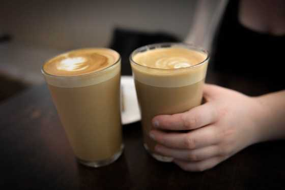
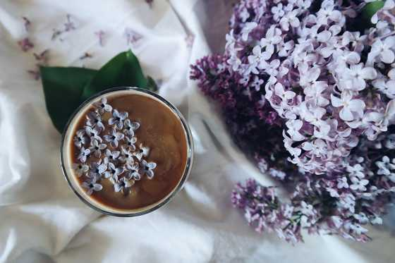
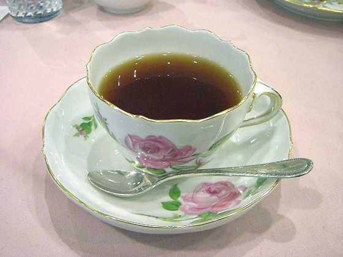
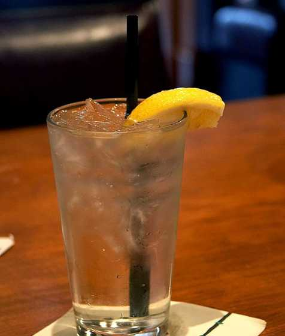
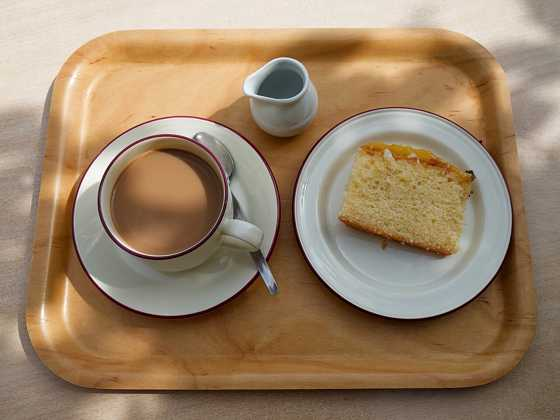
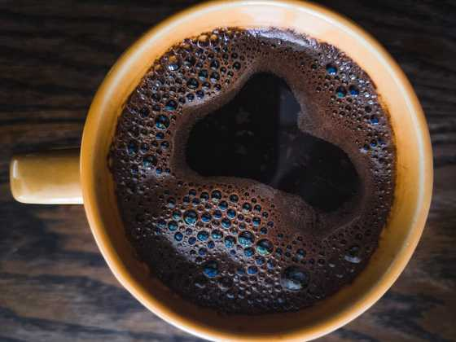
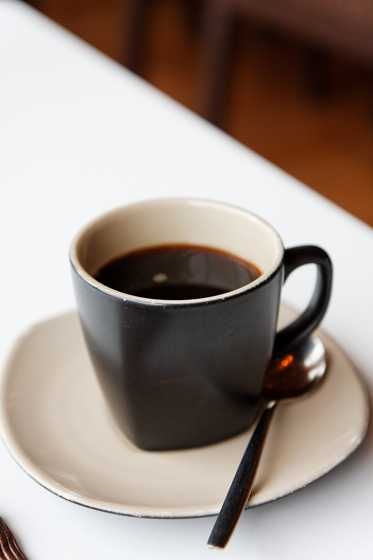
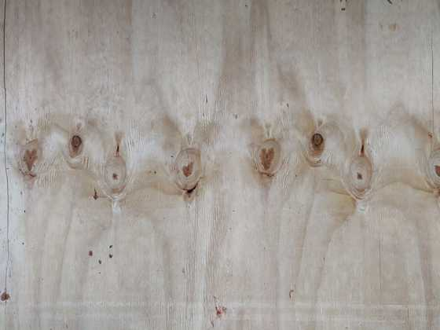

お店の想い
お店のInstagramには「一杯のコーヒーで出会える場所」という言葉が掲げられています。コーヒーを囲んで、人やひとときに出会える場所。それが uki Cafe&Space の根っこにある考えのようです。
水・木曜のランチ「コトリのランチ」のほか、ワークショップやマルシェの情報も発信されており、カフェであると同時に、人が集う「スペース」としても使われている様子です。
※店名「uki」の意味は確認できていないため、ここでは触れていません。このページの配色(藤色と、ことり色の黄)や文章は制作側のイメージです。

メニュー・提供内容
コトリのランチ
毎週水・木曜日に提供(Instagramより)。「ことりプレートランチ」「パンランチ」の名前が確認できます。
ケーキ・焼き菓子
Instagramのハイライトに「ケーキ」があります。内容は準備中です。
コーヒー
店の言葉にあるとおり、一杯のコーヒーがお店の入口です。銘柄などは準備中です。
イベント
ワークショップ・マルシェの情報をInstagramで発信されています。
営業時間: 準備中 定休日: 準備中 価格: 準備中 電話: 準備中









口コミ
以下は制作側が作成したイメージ例です。実際のお客様の声ではありません。
イメージ例
コーヒーを飲みながら、ほっと一息つけました。ゆっくり話せる雰囲気がうれしいです。
イメージ例
手づくりのランチプレートが、見た目も楽しくて満足でした。また月が変わったら来たいです。
イメージ例
駅から歩いて行けるので、用事のあとの休憩にちょうどよかったです。